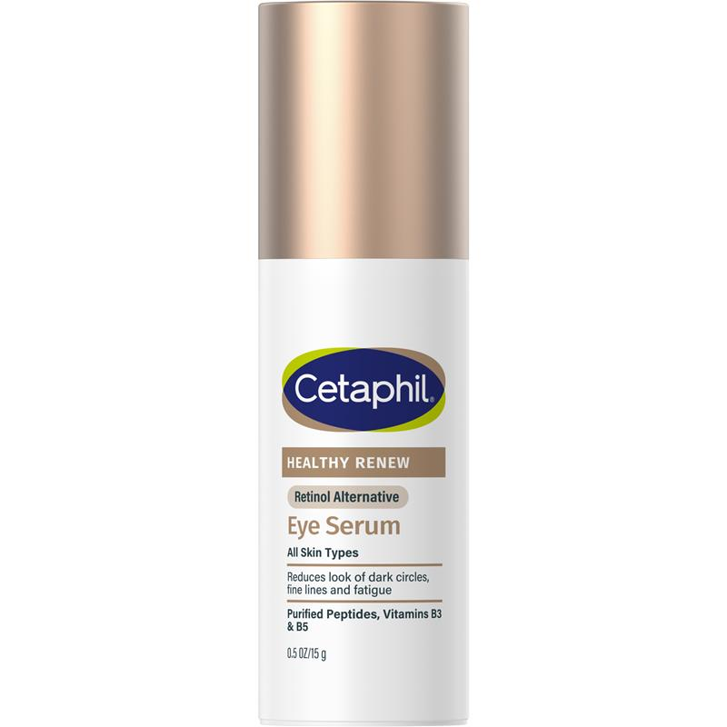

Cetaphil
Cetaphil Healthy Renew Eye Serum 15g
Ingredient Analysis (40 ingredients)
Safe
1,3-propanediol (C3). Bio-based humectant and solvent. Very short chain, safe for Malassezia-prone skin.
Safe
Short-chain diol used as humectant and preservative booster. Not a lipid, safe for Malassezia-prone skin.
Safe
Synthetic hydrocarbon emollient. Pure alkane structure with no ester bonds or fatty acids. Malassezia cannot metabolize saturated hydrocarbons.
Avoid - feeds Malassezia
Shea butter. Contains oleic, palmitic, stearic, and linoleic acids (C16-C18). Feeds Malassezia yeast and can worsen seb-derm/fungal acne.
Avoid - feeds Malassezia
Coconut oil containing lauric (C12), myristic (C14), and other fatty acids in the C11-C24 range that feed Malassezia.
Safe
Synthetic polymer thickener and emulsion stabilizer. Not a lipid source, safe for Malassezia-prone skin.
Safe
Synthetic hydrocarbon emollient. Saturated hydrocarbon that Malassezia cannot metabolize.
Safe
Inorganic mineral (silicon dioxide). Not a lipid. Cannot feed Malassezia. Used for texture and oil absorption.
Possibly problematic
Vitamin E acetate. The acetate ester form of vitamin E. Generally considered low risk as the acetate (C2) is very short chain. May contain trace plant oils.
Possibly problematic
Mix of C14-C22 fatty alcohols. Similar profile to cetearyl alcohol.
Safe
Edelweiss extract with antioxidant properties. Water-soluble botanical, not a lipid source.
Avoid - feeds Malassezia
Polyglycerol ester with stearic acid (C18). Contains C18 fatty acid ester bonds accessible to Malassezia.
Safe
Gentle non-ionic surfactant. Sugar-based cleanser that rinses off. Generally Malassezia-safe.
Possibly problematic
Rice sake lees extract (fermented). Fermentation byproduct that may contain lipids. Use with some caution.
Avoid - feeds Malassezia
Ester of glycerin and stearic acid (C18). Malassezia can hydrolyze this to access the C18 fatty acid. Common trigger for fungal acne.
Possibly problematic
C18 fatty alcohol. Not a direct Malassezia food source. Similar to cetyl alcohol in safety profile.
Safe
Hydrolyzed soy protein for skin conditioning. Protein hydrolysate, not a lipid source.
Safe
Crosslinked silicone elastomer for smooth texture. Inert silicone structure that Malassezia cannot metabolize.
Safe
Small molecule humectant (C4). Far below the C11+ range for Malassezia feeding. Very common, safe ingredient.
Safe
Chelating agent (EDTA alternative). Not a lipid. Safe for Malassezia-prone skin.
Safe
Natural gum arabic thickener. Polysaccharide from acacia tree, not a lipid source.
Safe
1,2-octanediol (C8). Humectant with mild antimicrobial activity. C8 chain is below the C11+ threshold for Malassezia feeding. Safe for fungal acne.
Avoid - feeds Malassezia
Emulsifier that breaks down to lauric acid (C12). Lauric acid is within the C11-C24 range that feeds Malassezia.
Avoid - feeds Malassezia
Sorbitan ester with isostearic acid (C18). Contains C18 fatty acid ester that feeds Malassezia.
Safe
Salt form of hyaluronic acid. Polysaccharide humectant. Not a lipid, safe for Malassezia.
Safe
Polysaccharide thickener derived from fermentation. Not a lipid that feeds Malassezia.
Safe
Glyceryl ether with C8 chain. Skin conditioning agent and preservative booster. Safe for Malassezia - chain length below problematic range.
Safe
Butterfly bush extract with antioxidant properties. Water-soluble botanical, not a lipid source.
Safe
Thyme extract with antibacterial properties. Contains thymol with mild antifungal activity. May irritate sensitive skin.